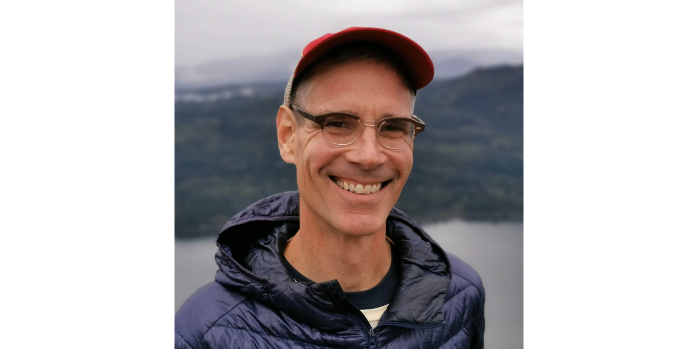

We spoke with Steve Curtis, Project Manager at CivicActions, about his work on the LINCS program for the Department of Education, what makes the mission so meaningful, and how empathy and collaboration shape his approach to supporting learners and teams alike.

You’ve been with CivicActions for nearly 15 years — what’s kept you here and excited about the work all this time?
There are so many different factors at play here: the sorts of work we pursue, the values and the structures we have in place to help balance and guide the way we do this work, but I think the biggest draw for me is and has always been the people. CivicActions has a strong culture of humility, creativity, and care — care for each other and for doing high-caliber work together — which attracts a great team. Folks are completely interested in getting good work done, and perhaps more importantly, in being open and supportive with each other along the way. I’ve made some of the best friends of my life here.
I also think it’s important to note: a company that asks “what keeps you here?” and really means it (meaning they listen and respond) is likely a company worth sticking around for. I’ve been really grateful to call CivicActions home these years.
You’ve spent a lot of time working on LINCS for the Department of Education. What makes that project especially meaningful to you?
I’ve got a background in education (I’m a reformed — or lapsed, depending on whom you ask — academic myself), so I was naturally inclined when it was introduced to me, but LINCS is a particularly special program. It aims to empower folks who’ve historically found themselves at the margins of the American education system: adult learners, non-native English speakers, and people coming out of the criminal justice system. LINCS is a clear embodiment of the ideal that the Federal government can be a force for strengthening American society in a broad, holistic way, and its mission is particularly meaningful to me today.
Your teammates often mention the empathy you bring to the work. How does that shape the way you approach projects and collaboration?
That’s a flattering thing to read, for starters…Project Managers manage projects, budgets, timelines, and stuff that falls off the rails, but really, we help manage people. Any attempt to inform or guide my peers’ work has to be grounded in trust and mutual respect, or it risks making matters worse as people chafe and push back against “management.” The more I know and understand the actual work my peers are doing, and the more I know and understand who they are as humans — where they’re coming from, and what sort of day they’re having — the more effective my attempt at guiding their work becomes, and the more our relationship turns from one of management to one of productive collaboration.
Fun fact: you’re a musician and have played at the CivicActions Summit Hootenanny. Can you share more about what makes that event so special and how music fits into your life?
At the risk of taking this answer straight off the deep end, let me just say for my two cents that making music with other people is just about the greatest manifestation of collaborative togetherness that we humans have ever cooked up. It’s collective expression and interaction in real time, it’s part-verbal (or at least singing is), but it also hits in an utterly emotional, non-verbal, sensory way. And when a music gathering is organized less around virtuosity and more around participation and inclusion, as our ramshackle Hootenanny is, it can be a pretty transformative way to be together as a group. We CivicActioners know each other well; we work side by side all year long, and it’s a lot of fun to turn this familiarity a bit on its ear. For our annual in-person Summit, we form ad hoc bands and, with little to no rehearsal, play through sets of songs we’ve chosen. A series of different people take instruments into their hands all throughout the night, and we see what sorts of joyful noise results. I make music outside of work in various professional and non-professional contexts, and the Summit Hootenanny is one of my very favorite music events of the year.
Learn more about how CivicActions supports the Department of Education through LINCS: https://civicactions.com/case-studies/dept-of-education-system-lifecycle-development-management/